External Server Guide
Access to the External Server
Upon access approval
The User will be able to connect to the external server using NoMachine client access: see Section 8.4 for details on installation and use.
Password policy
- The first password delivered must be changed at the first login.
- After 60 days the password will expire: the login window will show
new password - The passwords to be specified must meet the requirements described in Section 8.3.
First steps
Once you start NoMachine, these are the first three screens you will see:


- Select the “Kickoff Application Launcher” menu (in the lower left corner):


- Then you should:
- Click on the “Applications” button
- Select “BPLIM” and click on your project (i.e., “pxxx_name”). At this stage, you should see a graphical environment (‘Dolphin’ application1) like this:
You can see the prompt command line together with ‘Dolphin’ using the keyboard shortcut ‘F4’.
- Files with the "sh" extension allow you to send commands to your operating system or to enter your operating system for interactive use (for example, the file xstata17mp.sh will launch the graphical version of Stata 17). You can start the application by double-clicking the file name in ‘Dolphin’2 or by typing in the Terminal
xstata17mp.sh
- The directories that you have access to within the folder include:
| initial_dataset | Data sources provided by BPLIM. You have read-only access to this directory. |
| initial_dataset/modified | Modified data provided by BPLIM. |
| results | Output files that researchers wish to generate and extract from the server. You have read-write access to this directory. |
| tools | Specific analysis tools. You have read-only access to this directory. |
| work_area | Temporary work directory. You have read-write access to this directory. |
| /bplimext/doc/Manuals | Manuals and auxiliary files are available here. |
- You will have in your work_area folder templates for both Stata and R(
R.sh). By default, the template file is read-only.
- To reset and disconnect the remote desktop connection or session, you can simply log out of your remote session, as shown in the screenshot below. After you log out, close the window.3

Confirm before exiting by clicking on the “Logout” button to close the window:4

- In case you do not logout, your session will be left open until your next login. You may use this facility to run your programs. However, one must be aware that this option uses resources from the server, so the efficient solution to run your programs “overnight” is using the batch mode as described in Step 6 below. Furthermore, in case the server is rebooted during a maintenance procedure, your session will be automatically closed, and unsaved documents will be lost. We recommend you save at regular intervals your statistical programs.
Important guidelines
Keep your home area tidy
Do not save files in your home area
/home/USER_LOGIN. In case you exceed its size you will not be able to login.Check regularly the size of your project on the harddrive. Open a Terminal and apply the following steps:
- Move to the project folder:
cd /bplimext/projects/p000_xxx_yyy/ - List project size:
du -h - Check size by folder and list folders with at least 1Gb:
du --max-depth 1 -h | sort -n | grep G - Move to the folder ‘work_area’:
cd work_area - Repeat the check in this folder:
du --max-depth 1 -h | sort -n | grep G - Identify duplicated and temporary files and delete them: use the command
rm - Compress big files/folders you are not using at the moment:
Compress folders:
tar -zcvf YOUR_FOLDER.tar.gz YOUR_FOLDERCompress individual files:
gzip YOUR_FILE
Using the Terminal
Linux’s Terminal is a command-line interpreter. You can use the ‘shell’ for a wide range of tasks, including searching files and files’ contents, organizing your working space, and, most importantly, running your programs in batch mode.
- Linux’s Terminal can be accessed from5
RedHat > Applications > System > Terminal
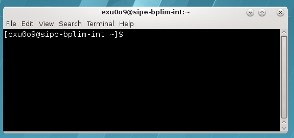
See Section 8.1 for a list of some of the most used commands.
If you use a non-English keyboard, the ‘true’ keyboard might be different from the one you see. The changes apply mostly to the symbols, not letters or numbers. For example, in case you have a Portuguese keyboard on your computer the ‘+’ is now in key ‘?’, or the ‘*’ is in SHIFT + ?. This issue is specific to the Operating System of your computer
Remember that Linux is case-sensitive: e.g., “
LS” and “ls” are treated as different commands.You can use the arrow keys to scroll up and down through the commands you have entered.
You can use the “Tab” key to complete the command line automatically.
e.g., type the following line to list elements within a folder in a ‘human-readable’ format,
h, long list format,l, in reverse order,r, sort by modification time,t, and almost all files,A,ls -lArth
Statistical software
The installation of additional commands/packages must be requested from the BPLIM team, bplim@bportugal.pt. Researchers are not allowed to install new commands/packages on the server autonomously.
Stata
Stata versions available in the server: 15, 16 and 17 (adjust the following lines to the Stata version you want to use)
- Stata can be accessed in interactive graphical or non-graphical modes.6
Interactive non-graphical mode
Move to the desired folder, e.g.,
cd /bplimext/projects/I001_jdoe/and type
stata17-mp
You may add a ‘PATH’ to your system folder by typing, for example on Stata 16, the following command in the shell “vi ~/.bash_profile” and adapt the following line
PATH=$PATH:$HOME/.local/bin:$HOME/bin:/opt/bplimext/stata17For the interactive graphical mode click on the icons “xstata17mp.sh” (Stata 17) located in the ‘desktop’, depending on the desired Stata version,
You can use the ‘Do-file Editor’ in Stata to create your own “do-files” and “ado-files”, or you can use KWrite editor (or ‘gedit’)
You can open it from RedHat > Applications > Utilities > KWrite. You can also launch ‘KWrite’ from the ‘shell’ by typing ‘kwrite’
In case the Stata’s icon is not on your desktop, use Dolphin, move to the folder ‘/bplimext/scripts/wrappers/’, and drag and drop the file ‘xstata17-mp’ into the desktop
NOTE: to start Stata use the shortcuts in your project’s folder.
- To look for “ado-files”:
“Ado-files” are text files containing the Stata program. It is advisable that one create and save his/her “ado-files” so the results can be replicated later by running the saved “ado-files” on the BPLIM’s datasets.
Stata looks for “ado-files” in several places. When it comes to personal ado-directories, they can be categorized in four ways:
(SITE), the directory for “ado-files” your site might have installed;
(PLUS), the directory for “ado-files” you might have installed;
(PERSONAL), the directory for “ado-files” you might have written;
(OLDPLACE), the directory where Stata users used to save their personally written ado-files.
The ado-files you have just written or those created for this project can be found in the current directory (.).
Specific ‘ado-files’ you may ask to be made available in the server will be placed in your folder ‘/bplimext/projects/YOURPROJECTID/tools’. You should add this folder to your Stata ‘ado-files’ folder by executing the following command within Stata,
sysdir set PERSONAL "/bplimext/projects/YOURPROJECTID/tools"
You may also edit your ‘profile.do’ file, located in your root folder, “/home/YOURPROJECTID/”, and add key instructions you may want to be executed every time you start Stata. The above instruction is one of such cases. You can create or edit the file ‘profile.do’ using ‘Do-file Editor’ within Stata (‘vi profile.do’ or KWrite are also a possibility).
The sysdir command within Stata will tell you where they are on your computer:
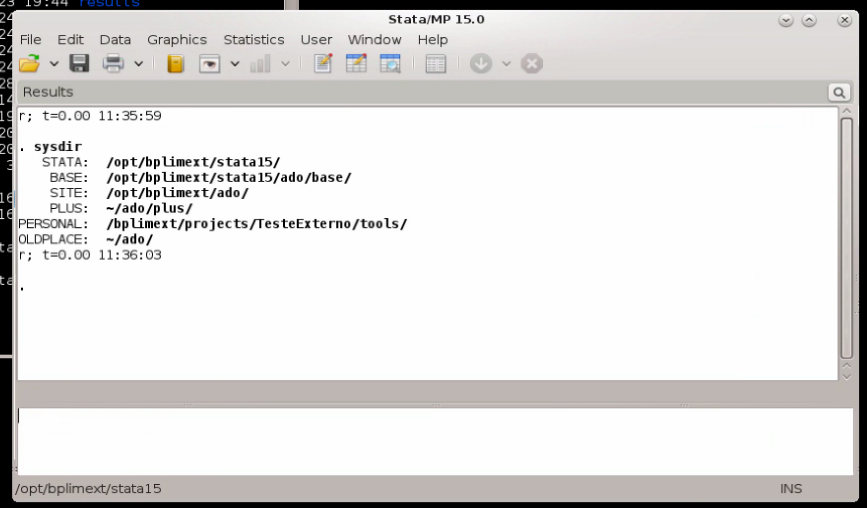
- Start a 'shell' in Linux and navigate to the directory of the “do-file” file that you want to run (ex: prog1.do)
cd /bplimext/projects/I001_jdoe/work_area/
- You might find it easier to use ‘Dolphin’ (= File Manager) to move over your folder structure. In this case, we recommend activating the ‘shell’ (= ‘Terminal’) associated with ‘Dolphin’
use Dolphin/File Manager
click ‘F4’ to activate the shell with Dolphin. Benefit: fast transition within folders and, at the same time, the ability to run shell commands
Create an ASCII file named, e.g., ‘batch_prog1’
Inside the file, write just a line with the execution command you would type in the ‘shell’; e.g.,
/bplimext/projects/I001_jdoe/stata-mp do/bplimext/projects/I001_jdoe/work_area/prog1.doYou can use, for example, the command line app ‘vi’ to create the batch file
- The batch file can also be created using apps like ‘kwrite’ or Stata ‘do file editor’
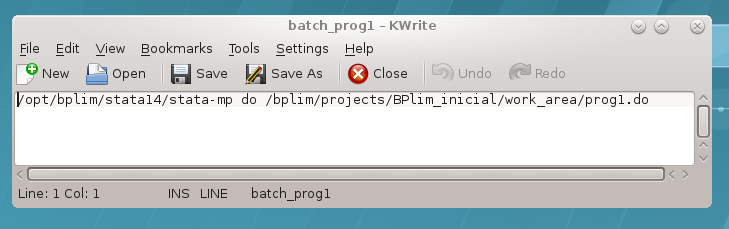
or
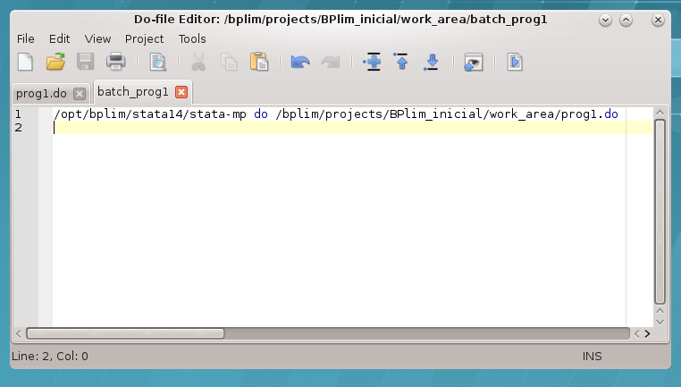
You may add the extension ‘.txt’ to the name of the batch file, as sometimes Stata doeditor does not ‘see’ the file ‘batch’, while it ‘sees’ ‘batch.txt’
Once the batch file is created, one runs the
.dofile in batch mode by typing in the ‘Terminal’:at now -f batch.txtType ‘man at’ to see a further option of the command ‘
at’; e.g., one could typeat now + 5 hours -f batch.txt
or
`at now + 4 minutes -f batch_prog1`to run the Stata program within 5 hours or 4 minutes from now, respectively. ‘man’ is the help function in Linux
Type ‘
top’ in the shell/Terminal to confirm the program is runningUnder ‘
top’ type ‘i’ to hide irrelevant processes (show less output)To kill a running process with ‘
top’ press ‘k’, for ‘kill’, write > the process number and then type ‘9’. The process number is > identified in the first column as PIDTo get out of the
top, type ‘q’Useful features of the command ‘
at’:
‘
atq’: use it to see programs in the batch queue (an ‘=’ sign indicates the program is running; an ‘a’ indicates it is in the queue and we see the time when it will be executed)‘
atrm#’: remove a batch from the batch queueone can see how the batch is running by typing
tail --f logcrc_may21.log
It allows you to see an updated version of the last lines of the log; i.e., it updates each time Stata changes the log. A key advantage of tail is that it does not interfere with the log file. Namely, it does not write over it.
- Another way to run a program in the background is by using the command ‘
screen’
‘
screen’ is useful when one wants to run Stata in interactive mode and still guarantees that if the network connection goes down one does not lose the session. We can simply kill the ‘NoMachine’ session and recover it later by typing ‘screen --r’We can run several instances of
screen. If this is the case, after opening a new NoMachine session, we need to type in the Terminal shell ‘screen -d’ to identify the running background sessions. We can retrieve a particular session by knowing the ‘pid’ number and typing ‘screen -r 34176’
R
- As with Stata, R can be accessed in interactive graphical or non-graphical modes.
- Interactive non-graphical mode: go to the RedHat symbol and type `R’ in the Search box

- Alternatively, you can open a Terminal and type
R
- Please make sure R is in your PATH; type
$PATHin the Terminal. If this is not the case, typePATH=$PATH:/usr/bin/
- Using RStudio.
- Open a Terminal and type
rstudio
- Please make sure RStudio is in your PATH; type $PATH in the Terminal. If this is not the case, type
PATH=$PATH:/opt/bplimext/R/usr/lib64/rstudio/bin/
- In case you face difficulties opening/saving files in RStudio, please open a Terminal and type
/bplimext/scripts/wrappers/R.sh
IMPORTANT: do not save your workspace image in your home folder (Save workspace image? [y/n/c]). If you want to keep the workspace file save it in your project folder under work_area.
RStudio Font Type: please make sure you are not using Font Type Courier (Menu Tools, Global Options, Appearance …)
Python
- Open a Terminal and type
python3
Julia
Alternative A
- Open a Terminal and type (
juliais located in /opt/bplimext/julia/lib/, you can add it to yourPATH)
julia
- Use Atom: open a Terminal and type
atom
Alternative B: using a container (see the discussion in the Appendix)
- Request a container with
Juliafor your project
The container will be in the folder
toolsinside the project folder
Advantages: you can build a Julia setup fine-tuned to your project, including the definition of Julia’s version and packages
Updates to the commands and packages list
Additional commands/packages or updates to the existing ones have to be requested from BPLIM’s Team.
Build a container to fine-tune your statistical packages
You can use Singularity containers in the server. To do so, please send us the definition file so we build the image and put it in your working area. You can find detailed information on Singularity containers at https://sylabs.io/. We provide some notes in the Appendix
Allowed outputs
Stata results can be exported to a file on disk using one of the following formats:
ASCII files: e.g., log files
graphs: as
.PNG(do not use the option save, or saving, within a graph command; instead, use the separate command line ‘graph export xyz.png’)csv: CSV (Comma Separated Value format), e.g., for use with MS Excel
rtf: Rich Text Format for use with word processors
xls or xlsx: Excel files with output tables
tex: format
Removing outputs
The output files, e.g., log files or images, must be requested from the BPLIM team, bplim@bportugal.pt. Researchers are not allowed to place or remove files on the server autonomously.
Place in the “results” folder all the outputs you want to remove from the server.7
Send an email with the title “project I001_jdoe: request for result extraction” to “bplim@bportugal.pt”.
Upon validation, the results will be sent to you via email.
User’s Home folder
Do not save files in your Home folder: “/home/USER_ID/”.
Regularly clean your Trash folder. If your disk use goes over the quota, you will be prevented from login in. In the Terminal type:
rm -rf ~/.local/share/Trash/*
Scientific support
Researchers will be provided with the necessary scientific and computational support (i.e., advises on programming, computational resources, micro econometrics, and econometrics of panel data for research undertaken with the selected microdata).
Appendix
Basic ‘shell’ commands on Linux
top: List the procedures that are being executed on the serverpress ‘
i’ option to omit background processes;clicar press ‘
h’ para help on top options ; ‘h’ > option to obtain the top command help.
pwd: Show current working directorycd: Change directorycd /bplimext/projects/I001_jdoe/work_area/‘
cd ~’ moves to your home folder
cp: Copy file(s) to a given pathcp prog1.do /bplimext/projects/I001_jdoe/results
mv: Move file(s) or rename a file from a given pathmv prog1.do /bplimext/projects/I001_jdoe/results
rm: Delete a filerm /bplimext/projects/I001_jdoe/results/prog1.do
mkdir: Creates a directorymkdir programs
rmdir: Deletes a directoryrmdir programs
screen: Switch between screenscreen top
man: Show the manual page for the given commandman ls
du -h: Check the information on disk usage of files and directories.
The “
-h” option with “du” command provides results in “Human Readable Format”.
Ex: du /bplimext/projects/I001_jdoe/work_area/
df -h: Check disk space utilization and show the disk space > statistics in “human readable” format.vi: View ‘ASCII’ files; e.g., log filesghostscript: Preview files with the extensions of .eps and .pdf
ghostscript /bplimext/projects/I001_jdoe/results/file_name.pdf
okular: View ‘PDF’find: Find files
Structure: find /path option filename
find . -name "*.do"Send the ‘
find’ output to a file:
find . -name "\*.do" > find_results.txtLook for a particular string within the ‘find’ output:
find . -name "\*.do" | grep "analysis"Identify files with extension ‘.do’ that contain the word ‘graph’:
find . -name "\*.do" -exec grep "graph export" '{}' \; -print
passwd: Change your passwordTo exit a program, type CTRL + C (‘CTRL + C’ kills a particular execution in the shell)
Using the ‘vi’ file editor
In the shell type ‘
vi batch1.txt’These are the main shortcut keys
‘i’ insert text
‘ESC’ key get out of the ‘insert’ mode
‘x’ delete specific characters
‘dd’ delete a full line
‘10 dd’ delete 10 lines
‘yy’ copy lines
‘p’ paste lines
‘SHIFT + G’ go to the last line
‘gg’ goes to the first line
‘ESC + q!’ exit ‘vi’ without writing
‘w!’ write and replace the file
‘ESC + q’ exit the ‘vi’ session
Check, for example, https://www.cs.colostate.edu/helpdocs/vi.html
Much easier solution: call ‘
gedit’ file editorLinux commands I have to add to the manual
‘CTRL + R’: allows me to recover a previous command
vi .bash_history
External server’s password requirements
| Rule | Value | Notes |
| Maximum Password Lifetime | 60 days | After 60 days the password will expire and has to be changed in the next login. The password can be changed at any moment using: (1), “All Applications | Settings | System Settings – Account Details”, click “Change Password”; or, (2), in the ‘Shell’ type ‘passwd’ |
| Minimum Number of Character Classes | 4 | You should include at least 4 classes of characters in the password. For example, small letters, capital letters, numbers and punctuation marks. There are a total of five classes:
|
Number of characters: by using the same character 3 or more times may imply the use of an additional class (it is highly recommended that you do not use consecutively the same character more than 2 times) |
||
| Minimum Length of Password | 8 | The minimum size of the password is 8 characters (it may be higher in case you repeat characters) |
| Password History | 7 | One cannot use a password defined in the previous set of 7 passwords |
| Maximum Consecutive Failures | 6 | If the user fails 6 consecutive times the password the account will be locked for the time defined in “Lockout Time” |
| Fail Interval | 60 sec. | Time interval for attempts to enter a password to be considered consecutive. If more than 60 seconds have elapsed since the last attempt, consecutive attempts are no longer considered, ie the number of failures, according to the requirement "Maximum Consecutive Failures" becomes one. |
| Lockout Time | 600 sec. | Time (10 minutes) during which the account will be locked if the maximum number of failed attempts is reached. |
Download, install and configure NoMachine client
Step 1: go to the link below and use the credentials provided by BPLIM to access the site. Note: sometimes the internet provider, e.g., a University, may block access to this particular website. Please check with your provider in case you get an error while trying to use the link.
https://www.bportugal.pt/webdrive/index.php/s/irAzxZmir8KHyzD/authenticate

Step 2: download the file with an extension compatible with your OS (Operation System)
Step 3: install ‘NoMachine’
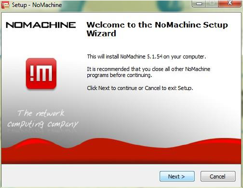


Step 4: reboot your computer
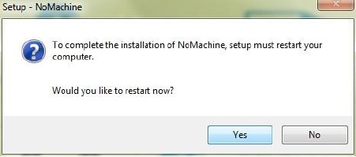
Step 5: NoMachine client access configuration
Step 5.1: start ‘NoMachine’ and create a new connection

Step 5.2: Choose ‘NX protocol’

Step 5.3: Define the ‘Host’ as bplimexterno.bportugal.pt, ‘Port’ 4000
Click ‘Use UDP communication for multimedia data’
Step 5.4: Use password authentication, with or without proxy, depending on the instructions of the network administrator/user 's computer support, with the name “BPLIM-LabInvestMicrodados Banco de Portugal”.
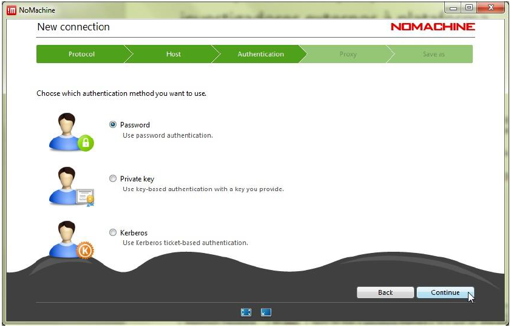
Step 5.5: Do not use a ‘proxy’
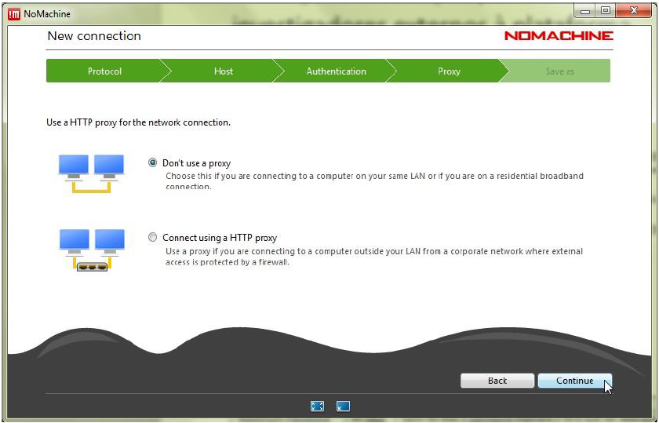
Step 5.6: Define a name for the connection
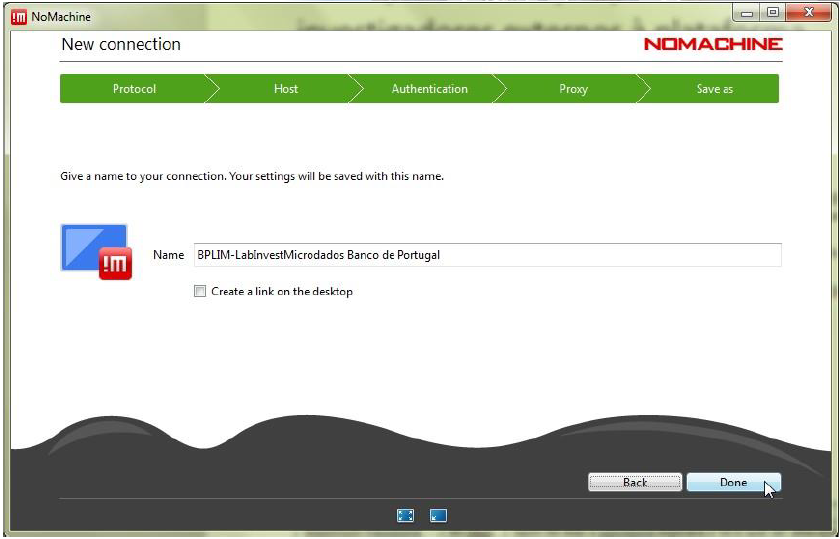
Step 5.7: Once the entry for bplimexterno.bportugal.pt has been created, connect:


Step 5.8: Before the first effective connection, it may be necessary to accept the certificate from bplimexterno.bportugal.pt
The Investigator should verify that the "fingerprint" (verification code) is:
SHA256 ED 1B D9 E2 C2 F8 C6 08 1A 53 5F 97 DA 71 77 D9 D2 EE 7A 5F 9C 35 87 B3 19 F4 7E A1 CB 2C 68 0B
Step 5.9: Connect with the UserID (case sensitive) and password provided by Banco de Portugal:
Step 5.10: After the first successful login, it is necessary to change the password, which must comply with the Password Policy defined above.
If the new password does not comply with the Password Policy, the original password provided by the Banco de Portugal will be re-requested. See Appendix 3 for details.
The NoMachine client does not tell you why the new password was not accepted – it is the responsibility of the user to verify that the new password is in compliance.
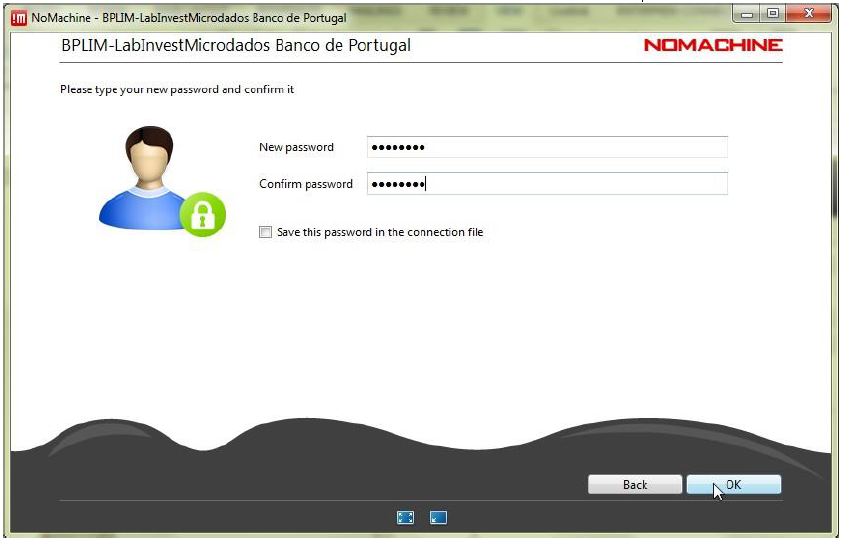
Step 5.11: Upon login success, the following screens should appear
Once logged in and with access to a KDE session, click on the upper right corner of the KDE desktop, as shown below, to access the menu and then expand the screen as exemplified for greater ease of use.
Step 5.12: You should see the following screen.
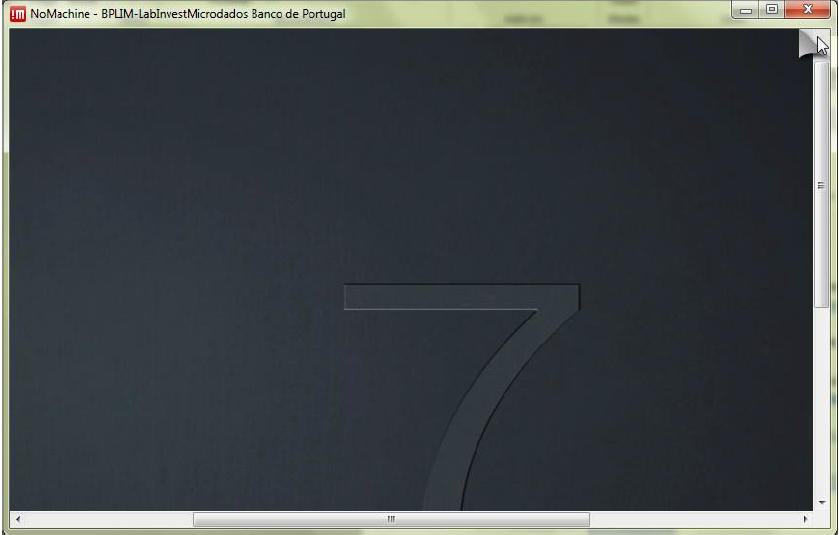
Step 5.13: Click ‘Display’
Step 5.14: Click ‘Fit to window’ and click ‘Done’
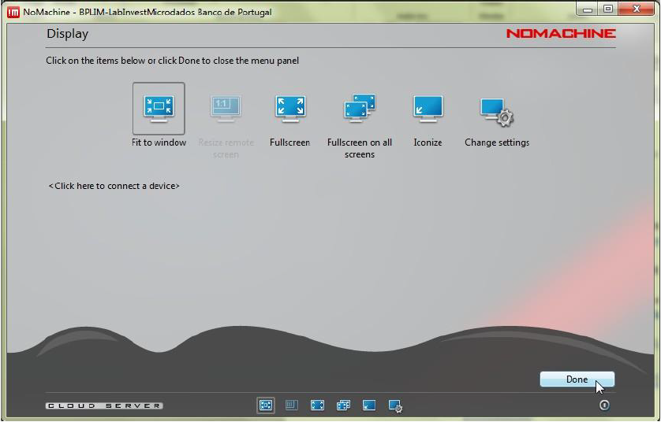


Frequently Asked Questions
- Mac users are not able to install NoMachine, receiving the following message

Please check if your Mac OSX is updated. Temporary solution: download NoMachine Enterprise Client from the official website, and run the installation file:
https://www.nomachine.com/download-enterprise#NoMachine-Enterprise-Client
- NoMachine authentication failure
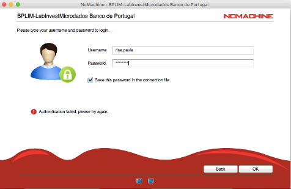
In some cases, it occurs due to a different keyboard layout. For example, if you have a Portuguese keyboard, but the website assumes a US keyboard, and your password contains a symbol like ‘ç’ then you will get a “wrong password” message. Please check the keyboard layout that is active when you type the password. Alternatively, change the password after the first login with NoMachine. Use linux’s command ‘passwd’.
Login fails, and the system shows the message: "Could not connect to the server. Error is 138: Connection is timed out" Please check if your network has a strict firewall; e.g., some researchers are not able to reach BPLIM’s server within their University network. Please check if in a different location, like at home, the connection works.
- User pressed ‘Lock’ instead of ‘Log out’ and the unlock/password does not work:
Check if the keyboard settings are correct (e.g., PT or UK)
Close the ‘NoMachine’ connection and start a new one. Before the last step -before the 'Login’- right-click and choose ‘Logout’. Double-click for the new connection
- “Cannot see the screen in NoMachine” (see image below)

- OPTION A: move your mouse on top the upper right corner of NoMachine, you should see a “folded like sheet”, left-click your mouse, go to ‘Display’, ‘Change settings’, and click in ‘Disable client side hardware decoding’
OPTION B: Close the ‘NoMachine’ connection and start a new one. Before the last step -before the 'Login’- right click and choose ‘Logout’. Double-click for the new connection
“Error: Parameter ‘agentm_display’ has bad value” (see image below)

Your home folder is full (/home/USER_LOGIN): Do not save files in your home folder
Ask BPLIM Staff to empty space in your home folder
- Session is frozen
- Go to NoMachine first screen and double-click in the following icon
- right-click on the icon below and choose “Terminar sessão”

- Visualizing tables
- In case you want to see the pdf of tables you have exported to you can create a generic tex file,
main.tex, with the following content:
\documentclass{article}
\begin{document}
\input{your_table.tex}
\end{document}
where your table is ‘your_table.tex’. The tex file can be compiled in the Terminal by typing
pdflatex main.tex.
Version control
The server runs GitLab. If you need to use Git for your projects, please send your request to BPLIM (bplim@bportugal.pt).
In case you want to use Git you should request it from BPLIM (bplim@bportugal.pt).
``Git is a distributed version-control system for tracking changes in any set of files, originally designed for coordinating work among programmers cooperating on source code during software development. Its goals include speed, data integrity, and support for distributed, non-linear workflows’’
First steps
- First, authenticate using an
ssh-key. Open a Terminal in your home folder
cd ~and type:
ssh-keygen -t rsa -C "BPLIM git"
cat ~/.ssh/id_rsa.pubSecond, after generating your SSH key, you’ll need to select the text of the key in your terminal. You can usually do this by clicking and dragging your mouse over the key text. Once the key is highlighted, right-click on the selection and choose ‘Copy’ to copy the resulting key to your clipboard.
Third, open Firefox (go to the RedHat icon and type Firefox in the search box) and navigate to https://vxpp-bplimgit.bplim.local/

Once you’ve navigated to the website, use your credentials for the external server to log in.
Once logged in, navigate to your profile. In the upper-right corner of the webpage, you will find the Settings option.
Now, on the left-side bar, click in SSH Keys

and paste the contents of the clipboard in the text box on the top right corner under Key.

Give a title, e.g., “BPLIM git”, and click in Add key.
Go to Projects

and create a New project, e.g., scripts_P999, where P999 is your_project_ID_number

To use git, it is necessary to modify or create the .gitconfig file in your user’s home directory. You can use KWrite (click in the RedHat icon and search for KWrite) to edit/create the file. The file should have the following format. In this file, you can adapt the name and replace ‘investa’ with your own user.
[cola]
spellcheck = false
[user]
name = Investigador A
email = investa@sxpe-bplim01.bplim.local
[gui]
editor = kwrite- You can clone the project by opening a Terminal and moving to your work_area:
cd /bplimext/projects/your_project_ID/work_area/and typing
git clone git@vxpp-bplimgit.bplim.local:investa/scripts_P999.git- Add the file
.gitignoreavailable in foldertoolsof your project:
cd scripts_P999
cp /bplimext/projects/your_project_ID/tools/.gitignore .- Do your first commit & push
git add *
git commit -a -m "First"
git push- To use the version control system effectively, please place all your scripts and code files in the folder named ‘scripts_P999’. This organization is important for maintaining a structured and efficient workflow with the version control system.
Containers
Build your container
You can write a script to build your container using the template definition files available at our GitHub repository
Test your script and build the container using SylabsCloud (you can use your GitHub account to login)
Click in ‘CREATE’

- In the following step upload your ‘.def’ file or copy/paste its contents in the Text box:

Sylabs runs a first test on the validity of your script and releases the button ‘Build’ (click on it)
Follow the outcome at the bottom of the screen and check for possible error messages
Once you succeed in building the container, you can send us the definition file with your changes
Use the container in BPLIM’s server
Open a
TerminalMove to your project’s folder
cd /bplimext/projects/YOURPROJECTID/tools/containers
- Start the container by typing
singularity shell YOURPROJECTID.sif
The prompt of the
Terminalwill show:SingularityStart RStudio by typping
rstudio(small caps)
- Once inside RStudio you have access to the original folder structure of your project
Jupyter Lab
Explore Jupyter lab:
“JupyterLab is a web-based interactive development environment for Jupyter notebooks, code, and data. JupyterLab is flexible: configure and arrange the user interface to support a wide range of workflows in data science, scientific computing, and machine learning. JupyterLab is extensible and modular: write plugins that add new components and integrate with existing ones.”
Start Jupyter Lab by typing:
jupyter lab --browser=firefox
Sample session:
Footnotes
Dolphin is an intuitive and easy-to-use file manager. You can use it, for example, to browse the directory, to create or delete files/directories (by using the right mouse button). For more information about Dolphin, please visit: https://userbase.kde.org/Dolphin .↩︎
In case ‘xstata17mp.sh’ does not launch Stata please see ‘Section 3’.↩︎
Click on the cross button at the upper right corner to close.↩︎
Note that before exiting the server, you need to make sure that all active programs have been closed (unless they have been launched in batch mode). Running programs in batch mode is justified for procedures that require high computational resources, intense calculation and/or long processing time.↩︎
The ’shell’ supports the commands in Linux operating system (some are disabled).↩︎
The version of Stata on the server has the same features as the Stata on Windows or Mac. By default when the Stata starts in this way the "working directory" active becomes your folder "work_area".↩︎
You may only remove text files that do not contain data or results that allow identification. For all the graphs you request as an output you must provide the corresponding Table to replicate it. You may only export graphs in .PNG format (no vector graph is allowed).↩︎